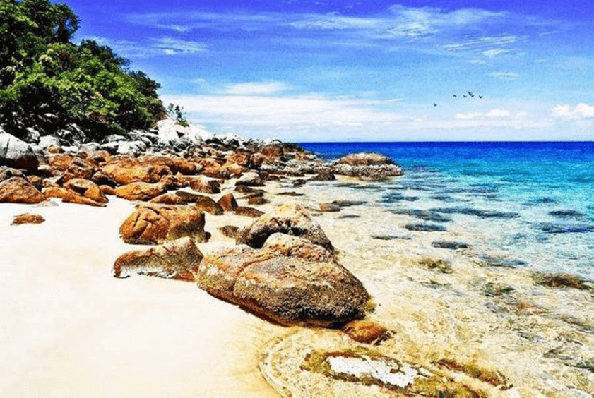
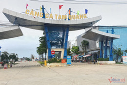
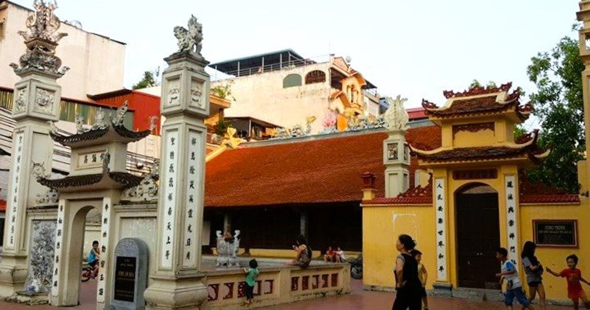
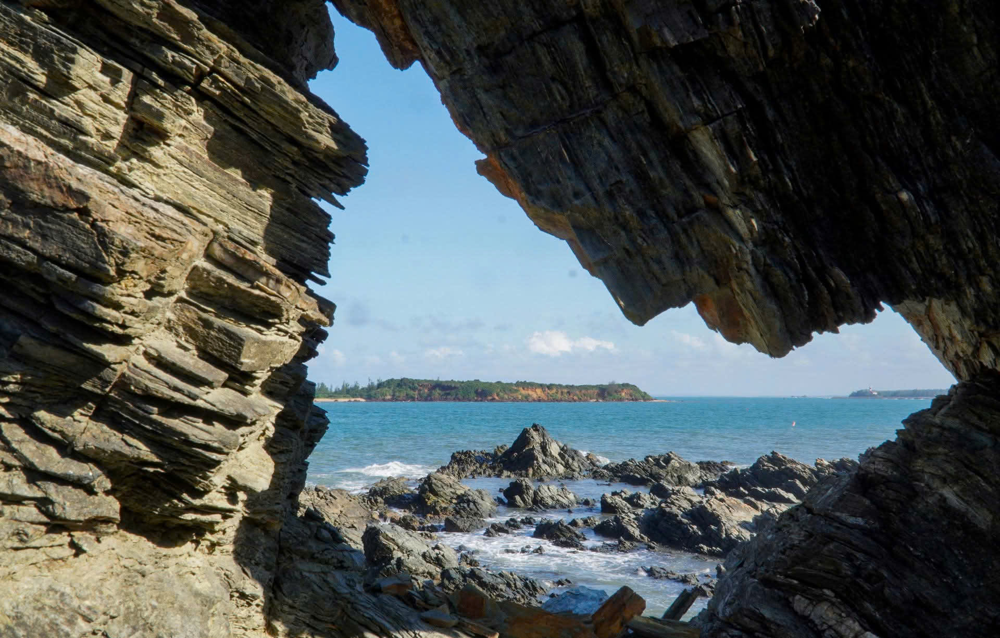

Bãi biển hoang sơ, nước biển trong xanh, bãi cát trắng mịn, thích hợp tắm biển, nghỉ dưỡng.

Cảng cá lớn của huyện, nơi nhộn nhịp tàu thuyền, mua bán hải sản tươi sống.

Di tích lịch sử - văn hóa cấp tỉnh, nơi thờ Thành hoàng làng, gìn giữ nét văn hóa địa phương.

Hòn đảo nhỏ yên bình, cảnh quan thiên nhiên đẹp, lý tưởng để tham quan, cắm trại.